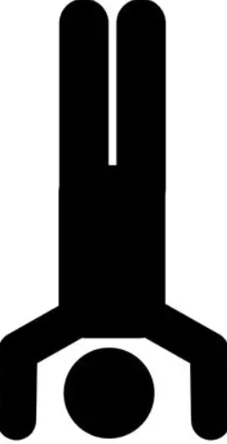

The Handstand
hold each step for 30 seconds, these progressions should bring you closer to a handstand
- Wall sit or plank hold to build shoulder strength
- Bear crawl to get used to putting weight on hands
- Elevated pike hold with feet on a chair or bed
- Wall walk where you walk your feet up the wall backwards
- Chest to wall handstand hold against the wall
- Kick up to wall handstand facing away from the wall
- Wall taps where you gently push your feet off the wall to balance
- Freestanding hanstand on the floor

L sit
practice these core building excercises every 3 days to achieve a stronger L sit
- L sit with hands elavated from ground
- Hollow body hold to build balance and core strength
- Crucifix crunches to build even more core strength

Elbow Lever
this trick looks insanely impressive but is actually very achievable for begginers, follow these steps to get it
- Elbow lever lean
- Hollow body hold
- Elbow lever assisted

Frog stand
This begginer friendly skill will help build a basis for complex level skills like a planche
practice holding the frog stand on the floor or with handholds, once your legs and arms are in position just lean forewards and hold for as long as you can
video on how to do a frog stand